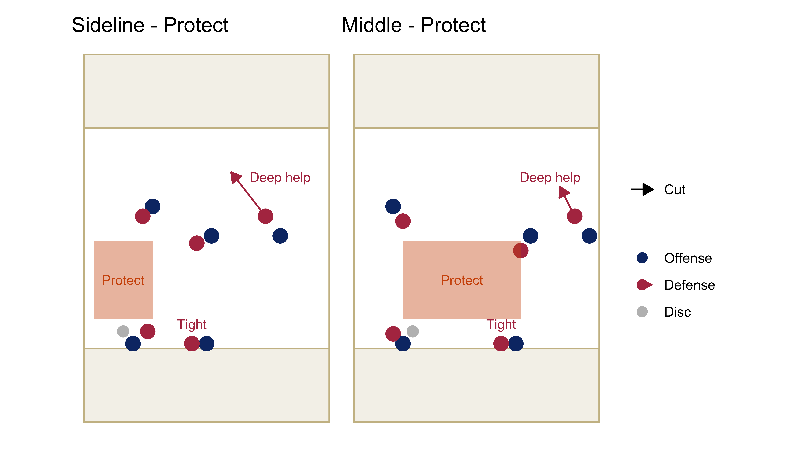
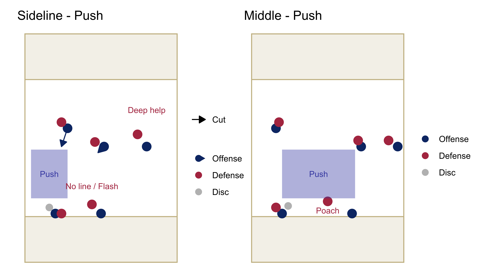
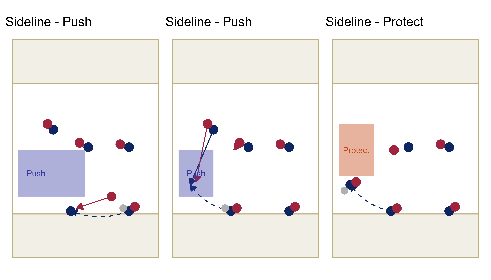
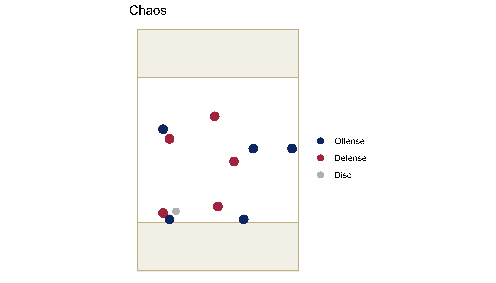
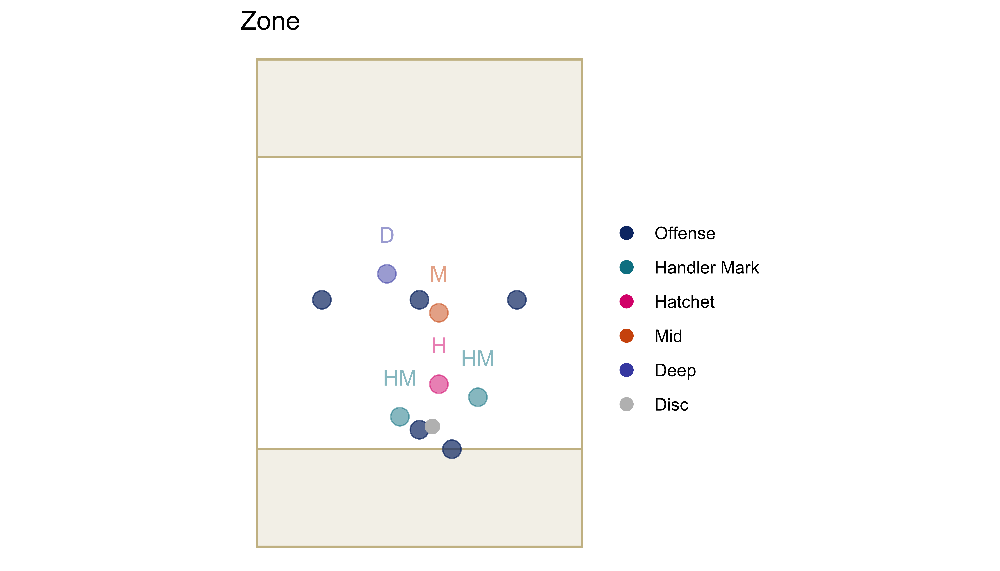

Defence
Defence Principles
Our aim is to generate turnovers by containing the offence and applying pressure at the right moments.
Contain
- Stifle pull plays
- Stop forward passes and quick continuation
- Push the offence into difficult areas
Pressure
- Actively hold forces
- Lock in on your mark in attacking areas and when the stall count is high
- Force difficult throws
Team Defence
- Use team defence to create opportunities for blocks
- Poach, flash, surround, switch, cover
- Beyond 1v1 Defence
Defense Strategies
Forces
Sideline
- Call a sideline to force towards
- Move the offence towards that sideline (contain)
- Aim to get blocks on that sideline (pressure)
Middle
- Stifle offensive flow by stopping continuation throws (contain)
- Force throws into traffic in the centre of the field (pressure)
- The force will change as the disc swings across the centre line
- Call the force each time
- Sideline repeat the call
- Transition to a sideline force after halfway
- Generally the opposite side the disc is on
- Sideline repeat the call
Adjustments
Expect adjustments to be called on line e.g.
- Straight up for the first 3 passes to stop hucks
- Put more pressure on the IOs to stop early inside breaks
Marking strategies
We will use two calls to indicate how upfield defenders should set up.
Protect will be our default marking strategy. Push will be used in specific situations to create block opportunities or to move the offence to a specific sideline.
As the possession progresses we trust players to use their own judgement in 1v1 situations.
- Win matchups athletically
- Take away the biggest threats
- Decide when to go for blocks
Protect
The aim of protect is to stop easy completions and force the offence to work hard for each pass.
- Active cutters: Protect the open-under space
- Inactive cutters: Be ready to offer deep help
- Reset: Stay tight to the reset, flush them upfield
Push
With push, we want to funnel cutters into areas where we can get blocks. We will only use push in the opponents half of the field. We are happy to give up very short gains on the open side in order to create block opportunities.
- Active cutters: Push your mark towards the open-under space. Be tight enough to apply pressure on high speed catches.
- Inactive cutters: Anticipate play and be ready to offer help where required
- Reset: Poach/flash to cut off upfield throwing lanes or to encourage lateral passes.

Adjustments
Expect adjustments to be called on the line e.g
- Handler marks sag in lanes
- Set up a bracket to give us deep help
- Push #23 under, everyone else protect
Push and protect
We may also call a combination of push and protect on the same play. E.g. We can use push to encourage a team to move the disc to a sideline. From there we can use protect to try to trap them.

Chaos
Our alternative to match defense is to use a hybrid, switchy set up that covers deep shots; makes it difficult for the offence to progress the disc; and creates a lot of noise in the open throwing lanes.
Principles
- Force middle
- Force the the offense to make a lot of short passes
- Allow backwards and sideways throws
- Take away deep options
- Create traffic in the main throwing lanes
- Flashes and switches
Positions
- Deep poach
- Call switches with same gender players
- Cover opposite gender players
- Cutter marks
- Protect under
- You may find yourself marking 2 players at once
- Set up in positions that cover both players
- Switch on to the biggest upfield threat
- Hand off players to deep poach or handler marks to remain in the central space
- Handler marks
- Flash in lanes and run switches on handler moves

Zone
We are only likely to use a zone if it is so windy that throws over the top are extremely difficult. In this case we will use a 3-1-1 zone.
- 2 handler marks
- Force the disc back towards the hatchet
- Inactive handler mark can help the hatchet
- 1 hatchet
- Get in the lane and stop forward passes
- 1 mid
- Stop throws over the front three
- Try to block holes in the wall
- 1 deep
- Stop deep throws
- Pinch in to help the mid when possible

The aim of this zone is to force the offence to make a lot of short passes. We are okay with passes that go backwards or laterally as long as we can stop the next pass.
This setup gives us flexibility e.g. - Mid and deep can either take mid and deep or a side of the field each - Spare handler marks can help the hatchet or block a swing
We won’t go into the nuances of this zone as we won’t be drilling it. Be prepared to use it in game and make adjustments.